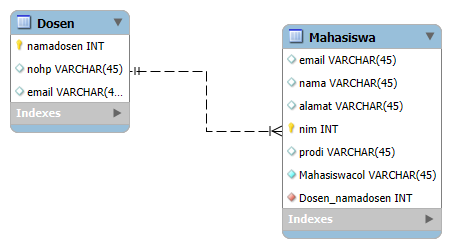
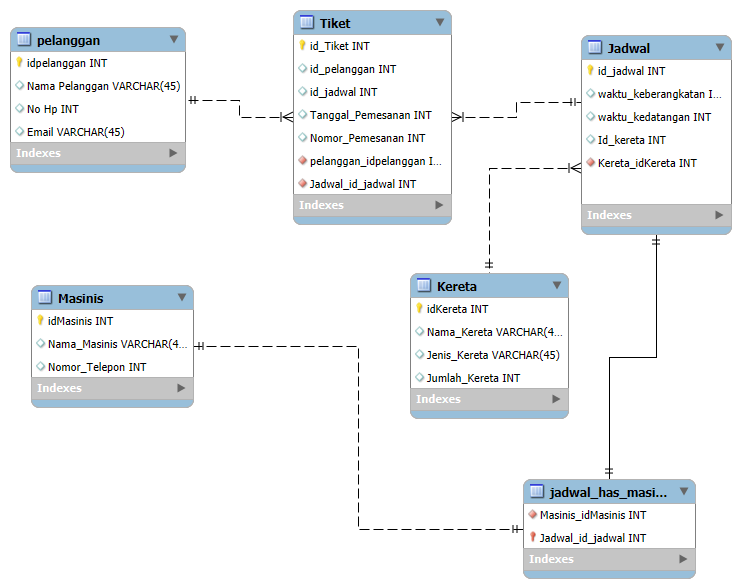

Basis Data
Ditulis oleh Muhammad Naufal Azura pada 28 September 2024
Sebelumnya sudah ada yang tau belum apa itu basis data, Basis data adalah kumpulan data yang terorganisir untuk memudahkan akses, pengelolaan, dan pembaruan. Data disimpan dalam tabel berisi baris dan kolom. di mana setiap baris merepresentasikan satu entitas atau record, dan kolom merepresentasikan atribut atau informasi spesifik dari entitas tersebut. Dengan adanya basis data, pengguna dapat menyimpan informasi dalam jumlah besar secara efisien dan mengaksesnya dengan cepat.
Tugas Pertemuan Ke-1
1. Apa yang Anda Harapkan dari MK Basis Data
Yang saya harapkan dari MK basis data ini adalah saya ingin mahir dan paham betul dengan memanfaatkan basis data, kita dapat menyimpan, mengelola, dan mengakses data secara efisien dan aman. Basis data membantu dalam pengambilan keputusan yang lebih baik, mendukung otomatisasi, meningkatkan produktivitas, serta menjaga integritas dan keamanan data. Selain itu, pengetahuan tentang basis data sangat relevan di berbagai industri, membuka peluang karir yang luas dan memungkinkan pengembangan aplikasi serta analisis data dalam skala besar.

2. Apa itu Basis Data
Basis data (atau database) adalah kumpulan data yang terorganisir secara sistematis sehingga dapat dengan mudah diakses, dikelola, dan diperbarui. Data dalam basis data biasanya disimpan dalam format tabel, yang terdiri dari baris dan kolom, di mana setiap baris mewakili satu catatan (record), dan setiap kolom mewakili satu atribut atau field dari catatan tersebut. Secara umum, basis data digunakan untuk menyimpan informasi atau data yang penting dalam berbagai aplikasi, seperti aplikasi perbankan, manajemen pelanggan, situs web, dan banyak lagi. Fungsi utama basis data adalah untuk menyimpan data dalam skala besar secara efisien, menjaga integritas data, dan memudahkan dalam pengambilan kembali data yang diinginkan.

3. Apa itu Conceptual DB
Conceptual database (basis data konseptual) adalah representasi tingkat tinggi dari struktur data yang berfokus pada pemodelan konsep dan hubungan antar entitas tanpa memperhatikan detail teknis atau implementasi. Ini merupakan salah satu tahap dari desain basis data, sering kali disebut model konseptual, yang menggambarkan secara logis bagaimana data diorganisasi.

4. Apa itu Physical Model
Physical Model (model fisik) dalam konteks basis data adalah representasi detail dari bagaimana data akan disimpan dalam sistem manajemen basis data (DBMS). Model ini berfokus pada implementasi fisik dari data, termasuk struktur penyimpanan, tipe data yang digunakan, dan indeks yang diperlukan untuk mengoptimalkan akses dan pengelolaan data.

Tugas Pertemuan Ke-2
1. ERD Workbench
Entity Relationship Diagram (ERD) di MySQL Workbench merupakan representasi visual dari struktur basis data yang memperlihatkan entitas (tabel) serta hubungan antar entitas tersebut. ERD membantu dalam merancang dan memahami basis data, memungkinkan pengembang dan analis data untuk memvisualisasikan koneksi antar tabel melalui relasi seperti satu-ke-satu, satu-ke-banyak, atau banyak-ke-banyak. Dengan MySQL Workbench, Anda dapat secara otomatis menghasilkan ERD dari basis data yang ada, atau merancangnya dari awal untuk memenuhi kebutuhan sebelum implementasi. ERD juga memudahkan pemahaman terhadap alur data serta integritas hubungan antar tabel. Untuk memulai, Anda dapat mengunduh MySQL Workbench dan mengikuti tutorial inisialisasi ERD di sini.
Pertemuan Ke-2
1. Entitas
Entitas adalah objek atau konsep dalam dunia nyata yang ingin kita simpan informasinya dalam basis data. Setiap entitas mewakili sesuatu yang memiliki eksistensi yang nyata atau dapat dikenali dalam sistem. Dalam ERD, entitas digambarkan dengan bentuk persegi panjang. Entitas memiliki identitas unik yang membedakannya dari entitas lainnya dan dapat berinteraksi dengan entitas lain melalui relasi.
Contoh entitas dalam sistem informasi bisa berupa Mahasiswa, Dosen, Mata Kuliah, dan sebagainya. Misalnya, dalam sistem informasi akademik, entitas Mahasiswa memiliki identitas unik seperti NIM (Nomor Induk Mahasiswa), yang membedakannya dari mahasiswa lain. Dosen juga merupakan entitas dengan atribut seperti ID Dosen dan Nama Dosen.
2. Atribut
Atribut adalah karakteristik atau informasi yang terkait dengan entitas. Atribut memberikan penjelasan lebih rinci tentang entitas tersebut dan menggambarkan properti atau sifat dari entitas. Dalam ERD, atribut biasanya digambarkan dengan bentuk oval atau lingkaran, dan dihubungkan ke entitas dengan garis.
Contoh atribut dari entitas Mahasiswa antara lain:
- Nama: Menyimpan nama lengkap mahasiswa.
- NIM: Nomor identifikasi unik yang diberikan kepada setiap mahasiswa.
- Alamat: Alamat tempat tinggal mahasiswa.
- Tanggal Lahir: Tanggal lahir mahasiswa.
3. Relasi
Relasi menggambarkan hubungan antara dua atau lebih entitas dalam basis data. Relasi ini menunjukkan bagaimana entitas satu berinteraksi atau terhubung dengan entitas lain dalam sistem. Dalam ERD, relasi biasanya digambarkan dengan bentuk wajik atau diamond, dan dihubungkan dengan entitas yang berhubungan.
Contoh relasi antara entitas Mahasiswa dan Mata Kuliah adalah relasi **"Mengambil"**. Relasi ini menunjukkan bahwa seorang mahasiswa dapat mengambil banyak mata kuliah, dan satu mata kuliah dapat diambil oleh banyak mahasiswa. Relasi ini bersifat banyak-ke-banyak (many-to-many). Relasi ini penting untuk menggambarkan bagaimana entitas saling terhubung, serta bagaimana data dapat diproses atau dimanipulasi dalam sistem.
Tugas Pertemuan Ke-3
1. Apa itu PrimaryKey, Foregent Key dan Candidate Key
Primary Key (PK) adalah atribut dalam sebuah tabel yang digunakan untuk mengidentifikasi setiap record atau entitas secara unik. Nilai dalam primary key harus unik dan tidak boleh NULL.
Contoh:
1. Tabel Mahasiswa: `NIM` (Nomor Induk Mahasiswa).
2. Tabel Produk: `Product_ID`.
3. Tabel Pegawai: `Employee_ID`.
4. Tabel Buku: `ISBN`.
5. Tabel Pelanggan: `Customer_ID`.
Foreign Key (FK) adalah atribut dalam sebuah tabel yang merujuk pada primary key di tabel lain untuk membangun hubungan antar entitas.
Contoh:
1. Tabel Pesanan: `Customer_ID` merujuk ke tabel Pelanggan.
2. Tabel Detail_Pesanan: `Product_ID` merujuk ke tabel Produk.
3. Tabel Transaksi: `Employee_ID` merujuk ke tabel Pegawai.
4. Tabel Buku_Pinjam: `Member_ID` merujuk ke tabel Anggota.
5. Tabel Pengiriman: `Order_ID` merujuk ke tabel Pesanan.
Candidate Key adalah satu atau lebih atribut yang dapat mengidentifikasi setiap record secara unik dalam tabel. Sebuah tabel bisa memiliki lebih dari satu candidate key.
Contoh:
1. Tabel Mahasiswa: `NIM` dan `Email`.
2. Tabel Produk: `Product_ID` dan `Serial_Number`.
3. Tabel Pegawai: `Employee_ID` dan `SSN`.
4. Tabel Buku: `ISBN` dan `Title`.
5. Tabel Pelanggan: `Customer_ID` dan `Phone_Number`.
Relation pada ERD adalah hubungan antara dua entitas. Hubungan ini dapat berupa one-to-one, one-to-many, atau many-to-many.
Contoh:
1. One-to-One: Setiap Mahasiswa hanya memiliki satu NIM.
2. One-to-Many: Seorang Mahasiswa dapat memiliki banyak Mata Kuliah.
3. Many-to-Many: Seorang Mahasiswa dapat mengambil banyak Mata Kuliah, dan Mata Kuliah dapat diambil oleh banyak Mahasiswa.
Many-to-Many tidak baik digunakan dalam ERD karena bisa menambah kompleksitas. Biasanya, hubungan ini dipisahkan dengan tabel penghubung (junction table).
ERD Workbench adalah alat yang digunakan untuk merancang dan memvisualisasikan struktur basis data. Berikut adalah contoh ilustrasi ERD yang dibuat dengan MySQL Workbench.
